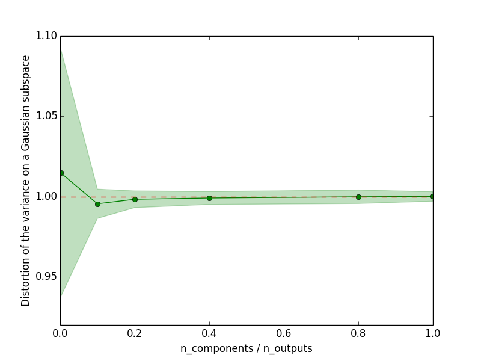

If a random projection matrix satisfies the Johson-Lindenstrauss, then the variance computed on the randomly projected output space is equal to the variance on the original output space up to an epsilon factor.
This is an illustration of Theorem 1 from the paper
Joly, A., Geurts, P., & Wehenkel, L. (2014). Random forests with random projections of the output space for high dimensional multi-label classification. ECML-PKDD 2014, Nancy, France
Python source code: plot_variance_preservation.py
from __future__ import division
import numpy as np
import matplotlib.pyplot as plt
from sklearn.random_projection import GaussianRandomProjection
random_state = np.random.RandomState(0)
# Let's first generate a set of samples
n_samples = 2000
n_outputs = 500
X = 3 + 5 * random_state.normal(size=(n_samples, n_outputs))
# Let's compute the sum of the variance in the orignal output space
var_origin = np.var(X, axis=0).sum()
# Let's compute the variance on a random subspace
all_n_components = np.array([1, 50, 100, 200, 400, 500])
n_repetitions = 10
distortion = np.empty((len(all_n_components), n_repetitions))
for i, n_components in enumerate(all_n_components):
for j in range(n_repetitions):
transformer = GaussianRandomProjection(n_components=n_components,
random_state=random_state)
X_subspace = transformer.fit_transform(X)
distortion[i, j] = np.var(X_subspace, axis=0).sum() / var_origin
# Let's plot the distortion as a function of the compression ratio
distortion_mean = distortion.mean(axis=1)
distortion_std = distortion.std(axis=1)
plt.figure()
plt.plot(all_n_components / n_outputs, distortion_mean, "o-", color="g")
plt.plot(all_n_components / n_outputs, np.ones_like(distortion_mean),
"--", color="r")
plt.fill_between(all_n_components / n_outputs,
distortion_mean - distortion_std,
distortion_mean + distortion_std, alpha=0.25, color="g")
plt.xlabel("n_components / n_outputs")
plt.ylabel('Distortion of the variance on a Gaussian subspace')
plt.show()
Total running time of the example: 2.45 seconds ( 0 minutes 2.45 seconds)